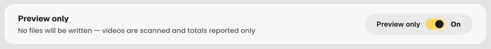
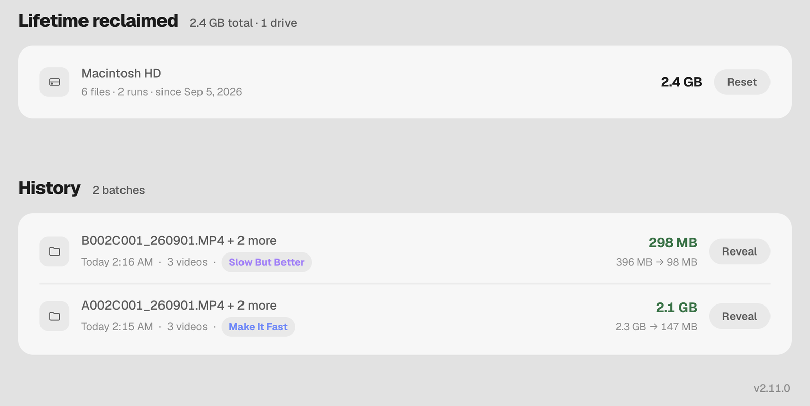

Your videos.
Up to 96% smaller.*
Shrink any video on your Mac with a modern, efficient codec. Whole folders at once. Two quality choices, no settings, and originals never touched.
macOS 11 or later · Apple Silicon. Notarized by Apple. GPL licensed.

Drop. Pick. Start.
Drop
A folder or a pile of files. Non-video files are ignored, not errors.
Pick a quality
The only decision you make.
Make It Fast
Encodes on the media engine in your Mac's chip, so a card dump finishes while you keep editing.
- Encodes faster than the footage plays*
- Mac stays usable
Slow But Better
A software encoder that spends more time on every frame for a smaller file.
- Smaller at the same visible quality
- Uses more of your Mac's computing power
Start
Walk away. Results land in a new Compressed_<date> folder, same names, flat.

Professional control. One switch away.
Full encoder control for people who know exactly what they want. CRF, presets, quality scale, bit depth, dry runs. Set per batch, never left behind for the next user.

Constant-quality control for x265. Default 18. Right always means better quality.
Nine snap positions. Trade encode time for file size. Default medium.
VideoToolbox quality scale. Default 62. Capped at 85, where the bitrate curve goes vertical.
Appears only when the batch contains a 10-bit file. 8-bit files are left alone.
Scan the batch and report the totals. Nothing is written. Check before an overnight job.
Each batch carries its own settings into the queue. Reset to defaults is one click.

Never touched.
- Sources are read-onlyNever moved, renamed, changed, or deleted.
- Results go to a new folder
Compressed_<date>, next to where you chose. Same names, flat. - Don't like it? Trash the folderYour masters are exactly where they were.
Keeps the receipts.
Every batch logged with what went in and what came out. Reclaimed totals per drive. A plain-text log per run. Reveal output in Finder.

Like any other Mac app.
Signed and notarized by Apple. Open the .dmg, drag SkinnyVideo to Applications, launch. No warnings, no workarounds.
What it doesn't do.
- Edit, trim, or color anything
- Run on Intel Macs
- Write ProRes, DNx, or AV1
- Watch folders or talk to a NAS
- Promise "no quality loss". Nothing lossy can.
Built by a production manager.
I run a corporate video team. Every tool I tried asked the cinematographer to choose a codec. Nobody wants to. So: two buttons, no settings, originals untouched.
GPL licensed. Source, releases, and bug tracker are public. No paid tier, no plan for one.
* Camera originals: three Sony 4K 25p 10-bit H.264 clips, 2.3 GB → 147 MB (94%), Make It Fast defaults, Mac mini M4 Pro, SkinnyVideo 2.11.0, 5 Sep 2026.
* ProRes: one 172 GB ProRes .mov → 6.4 GB (96%) and one 81 GB → 5.2 GB (94%), Slow But Better defaults, 12 Jun 2026, earlier 2.x build of this app.
* Already HEVC: one iPhone HEVC .mov, 266 MB → 62 MB (77%) with Slow But Better; 266 MB → 100 MB (62%) with Make It Fast. Sep 2026.
* Faster than the footage plays: the same three Sony 4K clips, 2 min of footage, encoded in about 29 s on a Mac mini M4 Pro. Speed scales with your chip.
Savings depend on how much your footage moves and how hard the camera compressed it. The app reports the real figure after every batch.